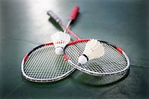

 Badminton is een sport die gespeeld wordt met een racket en een shuttle. Je slaat de shuttle heen en weer met je racket. Badminton shuttles kunnen gmaakt zijn van nylonenvan veren. Het is een binnensport en word dus alleen maar in een zaal gespeeld, hierdoor heb je geen last van wind en dan kan de shuttle dus ook niet zomaar van richtig veranderen. Badminton word vooral in Aziatische landen gespeeld maar natuurlijk ook in heel veel andere landen. Badminton is ook een sport die op de Olympische Spelen gespeeld word. Het is een Olympische sport sinds 1992 en het word nog steeds elke zomerspelen gespeeld.
 Niemand weet zeker waar badminton onstaan is, maar mensen denken dat badminton ontstaan is in Brits-Indie. Je kan een partij winnen door twee sets van 21 punten te winnen met een rally point systeem, een rally point systeem houdt in dat wie er ook serveerd je altijd een punt kan krijgen. De eerste die 21 haalt wint de set, tenzij het bijvoorbeeld 20-20 staat dan moet ereen verschil van 2 punten zijn, dus 22-20. Bij de 11 hou je een pauze. Als je serveert en je hebt even punten serveer je in het rechter vak en heb je oneven punten serveer je in het linkervak. Je hebt ook heel veel toernooien, zowel grote als kleine, over 3 grote evenementen in badminton zie j everder meer informatie
Niemand weet zeker waar badminton onstaan is, maar mensen denken dat badminton ontstaan is in Brits-Indie. Je kan een partij winnen door twee sets van 21 punten te winnen met een rally point systeem, een rally point systeem houdt in dat wie er ook serveerd je altijd een punt kan krijgen. De eerste die 21 haalt wint de set, tenzij het bijvoorbeeld 20-20 staat dan moet ereen verschil van 2 punten zijn, dus 22-20. Bij de 11 hou je een pauze. Als je serveert en je hebt even punten serveer je in het rechter vak en heb je oneven punten serveer je in het linkervak. Je hebt ook heel veel toernooien, zowel grote als kleine, over 3 grote evenementen in badminton zie j everder meer informatie